Authors: Morgan Grant, Antony Carrington
Type: theory · Category: other · PDF: https://arxiv.org/pdf/2610.36133v1
Analysis basis: full PDF text, analyzed in chunks
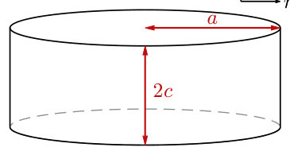
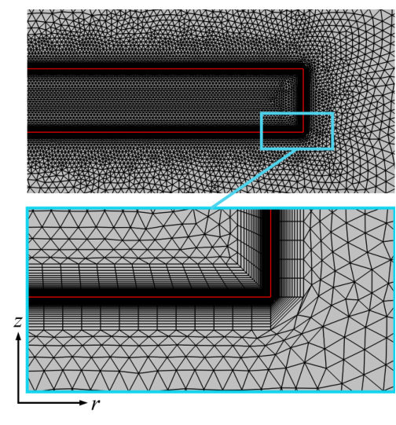
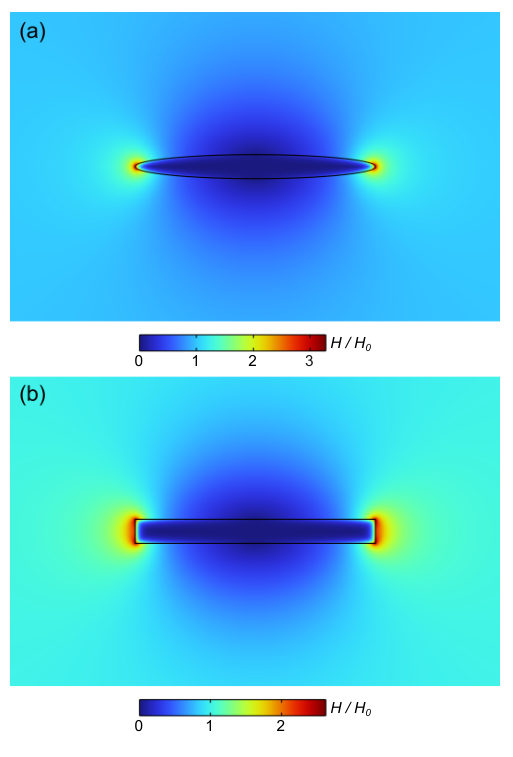
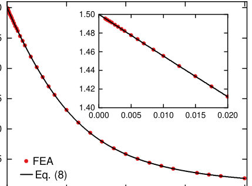
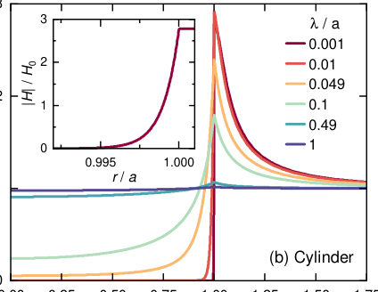
Summary. This work develops a high-precision, finite-element simulation technique to calculate the magnetic susceptibility of superconducting spheroids and cylinders. By accurately modeling geometry-dependent demagnetization effects, the authors provide reliable methods to extract the fundamental magnetic penetration depth ($\lambda$) from susceptibility measurements. This is crucial for characterizing novel superconducting materials using volume-exclusion techniques.
Why it may be interesting. While focused on condensed matter electromagnetism, the rigorous numerical treatment of boundary conditions and the development of generalized fitting functions for geometric parameters (like $R$) showcase advanced computational physics techniques applicable to complex quantum systems.
Main problem. The paper addresses the challenge of accurately determining the magnetic penetration depth ($\lambda$) of superconductors from magnetic susceptibility ($\chi$) measurements, which is complicated by geometry-dependent demagnetization effects.
Main result. The authors provide a high-precision, finite-element analysis procedure to quantify the shape-dependent Meissner response and derive improved analytical expressions for effective demagnetization factors and sample dimensions.
Method. The primary method involves solving the London equation using finite-element analysis (FEA) in three dimensions for superconducting spheroids and cylinders.
Model / system. The system modeled is a superconductor (spheroids and cylinders) characterized by a finite magnetic penetration depth ($\lambda$). The physics is governed by the London equation and the resulting magnetic susceptibility ($\chi$).
Key observables. Magnetic susceptibility ($\chi$), effective demagnetization factor ($N$), effective dimension ($R$), and the magnetic moment per unit field ($m/H$).
Important parameters / regimes. Penetration depth ($\lambda$), aspect ratio ($ u = c/a$), and the ratio $\lambda/a$.
Assumptions / limitations. The analysis assumes axial symmetry for computational efficiency and relies on linear approximations for small changes in $\lambda$ when relating measurements to $\Delta\lambda$.
Figures summary. Figures illustrate the geometry of the modeled superconductors (spheroids/cylinders) and show calculated field profiles ($H/H_0$) and radial field distributions for varying $\lambda/a$.
Paper structure. The paper establishes the physical problem, details the FEA methodology for calculating $\chi(\lambda)$, presents results for demagnetization factors and effective dimensions by comparing numerical findings to known analytical solutions, and concludes with guidelines for experimental application.
The magnetic penetration depth, $λ$, is a fundamental parameter of the superconducting state and is commonly determined from precision measurements of the magnetic susceptibility, $χ$, in the Meissner state. However, extracting $λ$ from such measurements requires an accurate treatment of geometry-dependent demagnetization effects, for which analytic results are only available in a limited number of cases. Here we present a finite-element analysis of the magnetic response of three dimensional superconducting spheroids and cylinders with finite penetration depth. By calculating the magnetic moment and susceptibility, $χ(λ)$, over a wide range of aspect ratios, we quantify the shape-dependent Meissner response and extract effective demagnetization factors in the $λ\rightarrow 0$ limit. For small but finite $λ$, we further determine effective sample dimensions from the initial variation of $χ(λ)$ and propose an improved analytical expression for these. Our results provide a high-precision procedure for determining $λ$ from volume-exclusion based susceptibility measurements and should be directly applicable to the characterization of novel superconducting materials.
Authors: N. L. Bobrov, L. V. Tiutrina, S. B. Feodos'ev, V. V. Fisun
Type: both · Category: other · PDF: https://arxiv.org/pdf/2610.37304v1
Analysis basis: full PDF text, analyzed in chunks
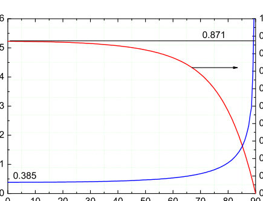
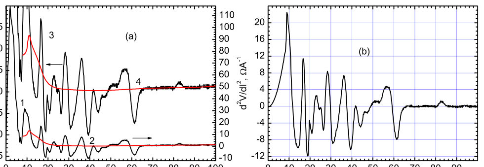
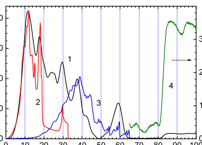
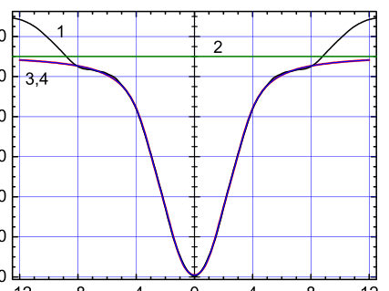
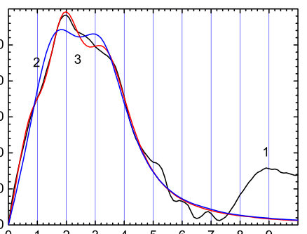
Summary. This work uses point-contact spectroscopy on 2H-NbSe2 to map out the superconducting energy gap and electron-phonon coupling. The study reveals significant anisotropy in the superconducting gaps when measured along different crystal axes. By analyzing the I-V characteristics and their derivatives, the authors confirm the role of two-phonon scattering and provide quantitative parameters for the superconducting state.
Why it may be interesting. The detailed analysis of energy gap anisotropy and the role of non-equilibrium phonons provides insights into the pairing mechanism and lattice dynamics in unconventional superconductors, which is relevant to understanding strongly correlated superconducting states.
Main problem. The study investigates the electron-phonon interactions (EPI) and the superconducting energy gap anisotropy in the material 2H-NbSe2.
Main result. The superconducting energy gaps are found to be anisotropic, exhibiting three gaps in the ab-plane and only two in the c-direction. Furthermore, two-phonon scattering processes are responsible for features observed at energies exceeding the phonon cutoff.
Method. The research employs point-contact spectroscopy to measure current-voltage (I-V) characteristics, analyzing the second derivative for EPI signatures and fitting the overall transport using generalized BTK models.
Model / system. The physical system is the 2H-NbSe2 superconductor. The analysis uses point contacts oriented along the c-axis and in the ab-plane, requiring theoretical modeling (like BTK theory) to account for multiple superconducting gaps and contact geometry.
Key observables. Second derivative of the I-V curve (for EPI), superconducting energy gaps ($\Delta$), and the anisotropy of these gaps.
Important parameters / regimes. Phonon cutoff energy, coherence length, tunneling parameter (Z), and the relative magnitude of the gaps in different crystallographic directions.
Assumptions / limitations. The analysis assumes that inhomogeneous contacts are necessary to isolate the EPI function, and that the BTK model, even when generalized, provides a suitable framework for fitting the multiple gap contributions.
Figures summary. Figures illustrate the angular dependence of transparency coefficients and show the I-V curve and its second derivative, comparing experimental data against theoretical fits.
Paper structure. The paper progresses by first establishing the experimental method (point-contact spectroscopy) to probe EPI and gap structure. It then develops theoretical corrections (e.g., for backscattering) and applies generalized superconducting models (BTK) to quantify the observed anisotropy and phonon scattering mechanisms.
The superconducting state of $2H-NbS{{e}_{2}}$ was studied using point contacts for two main orientations of the contact axis relative to the principal crystallographic orientations: along the $c$-axis and in the $ab$ plane. For contacts oriented in the $ab$ plane, dependencies proportional to the electron-phonon interaction function were obtained, which agree perfectly with the theoretical calculation. It was found that the features on the experimental curves associated with the electron-phonon interaction extend to energies twice the cutoff energy of the phonon spectrum and have an amplitude of the same order of magnitude throughout the entire energy range. It has been theoretically demonstrated that the features at energies exceeding the boundaries of the phonon density of states are caused by two-phonon scattering processes of non-equilibrium phonons on Andreev electrons. A criterion for the undisturbed nature of the crystal lattice in the region where gap features form has been found. Using $2H-NbS{{e}_{2}}-Cu$ heterocontacts in the superconducting state, a study of energy gaps was conducted for two orientations of the $NbS{e_2}$ crystal: along the $c$-axis and in the $ab$ plane. It was found that the superconducting energy gaps are anisotropic; specifically, three gaps were identified in the $ab$ plane, whereas only two were observed in the $c$ direction.
Authors: Vladimir Antropov
Type: theory · Category: other · PDF: https://arxiv.org/pdf/2610.36424v1
Analysis basis: full PDF text, analyzed in chunks
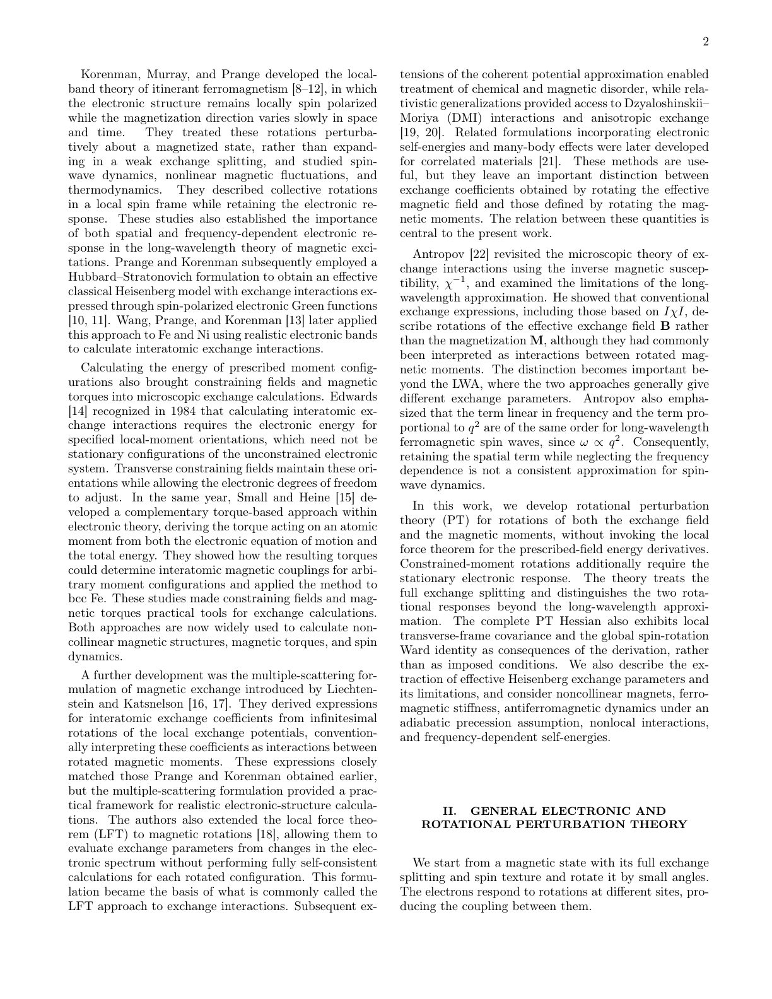
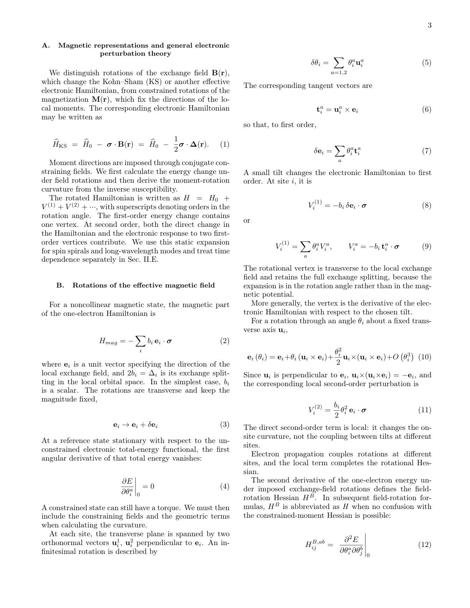
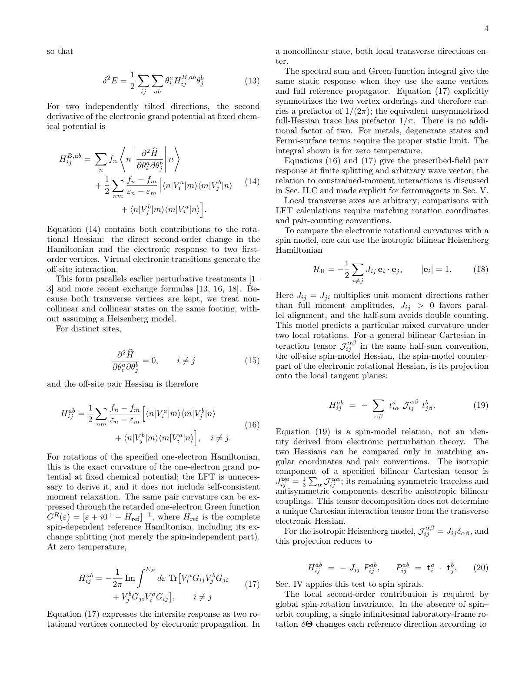
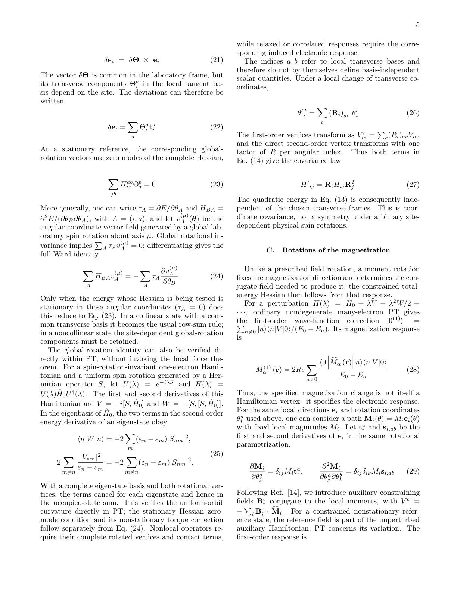
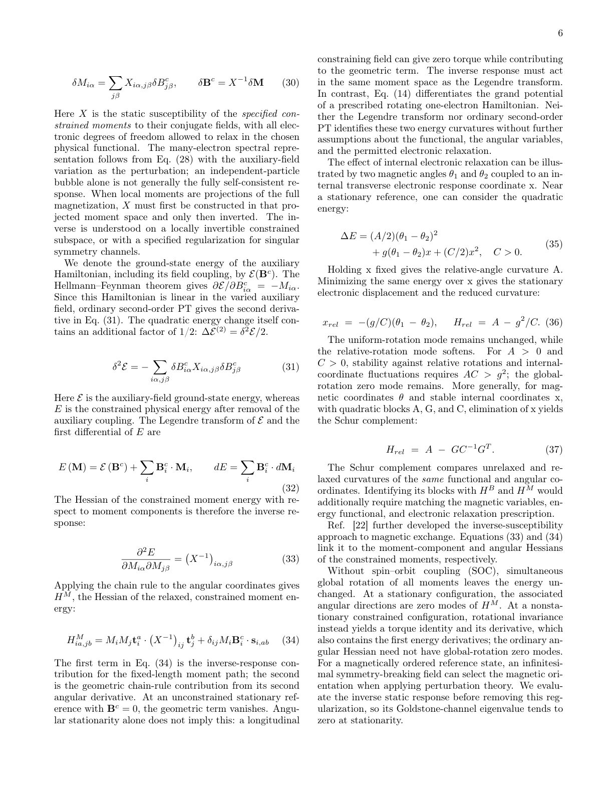
Summary. This work establishes a comprehensive rotational perturbation theory for magnetic interactions, allowing researchers to calculate energy curvatures by distinguishing between field rotations and moment rotations. It provides advanced, Green-function-based methods to derive magnetic stiffness and velocities, while also cautioning users about the limitations of interpreting local exchange parameters as universally transferable constants.
Why it may be interesting. The rigorous development of rotational invariance and the distinction between field- and moment-based energy responses provides a powerful, general theoretical tool for analyzing magnetic excitations beyond simple mean-field approximations.
Main problem. The paper develops rotational perturbation theory to analyze magnetic interactions in both collinear and noncollinear magnetic systems, crucially distinguishing between rotations applied to the exchange field versus rotations applied to the magnetic moments.
Main result. It derives Green-function expressions for energy curvatures directly from perturbation theory, establishing relationships between these curvatures and physical quantities like the inverse static susceptibility, while also highlighting that locally extracted exchange coefficients may not be transferable.
Method. The core method is Rotational Perturbation Theory (PT), involving the expansion of the energy functional in terms of small angular rotations, and utilizing Green's functions to calculate the resulting Hessian matrices.
Model / system. The study applies to magnetic systems with exchange interactions, modeled using a Hamiltonian involving the exchange field B(r) and magnetic moments M(r), examining spin spirals and general noncollinear configurations.
Key observables. Energy curvatures (for field and moment rotations), long-wavelength ferromagnetic spin-wave stiffness, and antiferromagnetic spin-wave velocity.
Important parameters / regimes. Exchange splitting, rotation angles ($ heta$), and the relationship between the field-rotation Hessian and the constrained-moment curvature.
Assumptions / limitations. The theory distinguishes between prescribed rotations of the exchange field and constrained rotations of the magnetic moments; calculations often rely on the long-wavelength approximation (LWA) or assume adiabatic sublattice precession.
Paper structure. The paper systematically develops the PT framework, derives the Hessian components using Green's functions, compares the results to known spin models, and concludes by analyzing the limitations regarding the transferability of derived exchange parameters.
We develop rotational perturbation theory for magnetic interactions in collinear and noncollinear systems, distinguishing prescribed rotations of exchange fields from constrained rotations of magnetic moments. At the full exchange splitting, we derive Green-function expressions for prescribedfield energy curvatures directly from perturbation theory, without invoking the local force theorem; constrained-moment curvatures additionally require the stationary magnetic response and are related to the inverse static susceptibility. We examine noncollinear pair interactions and planar and conical spin spirals, and derive the long-wavelength ferromagnetic spin-wave stiffness and, assuming adiabatic sublattice precession, the antiferromagnetic spin-wave velocity. Orbital-nonlocal magnetic potentials and correlated electronic response reveal further requirements for connecting rotational curvatures to collective magnetic behavior. As a practical extension, we project the complete transverse pair Hessian onto an effective scalar Heisenberg exchange and quantify the unreconstructed curvature. Biquadratic and three-spin examples illustrate why locally extracted exchange coefficients need not represent transferable bilinear interactions.
Authors: T. Wakamura, M. Hashisaka, M. Bard, S. Okazaki, T. Sasagawa, T. Taniguchi, K. Watanabe, K. Muraki, N. Kumada
Type: experiment · Category: other · PDF: https://arxiv.org/pdf/2610.36399v1
Analysis basis: full PDF text, analyzed in chunks
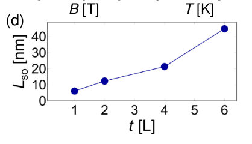
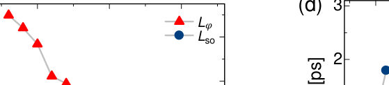
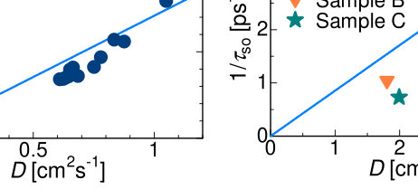
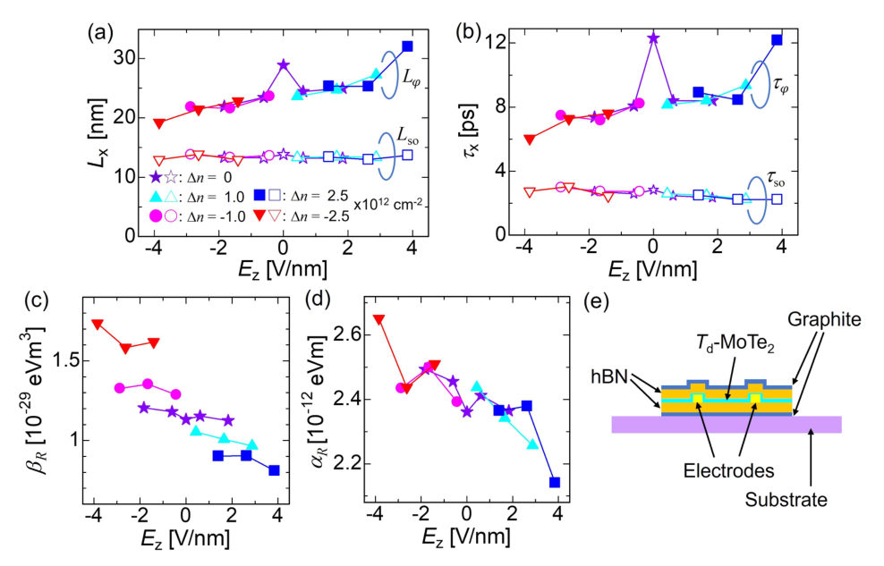
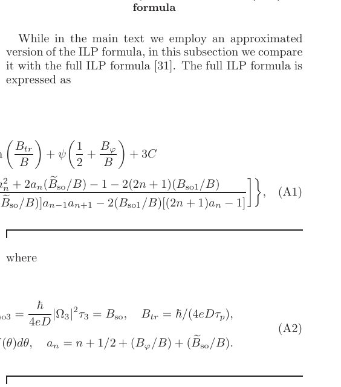
Summary. This work reports on the electrical control of spin transport in few-layer $T_{ m d}$-MoTe$_2$ using magnetotransport measurements. By analyzing Weak Antilocalization signals, the authors demonstrated that the spin relaxation time can be tuned significantly by an external electric field. These findings establish the material as a promising platform for realizing tunable spintronic devices.
Why it may be interesting. The ability to electrically tune spin relaxation in a 2D material like MoTe$_2$ is highly relevant for developing spintronic devices, which often rely on controlling spin lifetimes and transport mechanisms.
Main problem. The study investigates the electrical control of spin relaxation and spin transport in few-layer $T_{ m d}$-MoTe$_2$, a low-symmetry transition metal dichalcogenide.
Main result. The researchers demonstrated that the spin relaxation time ($ au_{so}$) in few-layer $T_{ m d}$-MoTe$_2$ can be electrostatically tuned by up to threefold, confirming that the D'yakonov–Perel' mechanism governs spin relaxation.
Method. Low-temperature magnetotransport measurements, specifically Weak Antilocalization (WAL) measurements, were performed using dual-gate structures to probe spin-orbit interactions.
Model / system. The physical system is few-layer $T_{ m d}$-MoTe$_2$. The analysis relies on the Iordanskii, Lyanda-Geller, and Pikus (ILP) theoretical framework to fit the magnetoconductivity data and extract characteristic spin-orbit lengths and relaxation times.
Key observables. Spin-orbit length ($L_{so}$), spin relaxation time ($ au_{so}$), magnetoconductivity ($\Delta\sigma(B)$), and Rashba parameters.
Important parameters / regimes. The tunability of $ au_{so}$ by up to threefold via gate voltage, and the identification of the D'yakonov–Perel' mechanism.
Assumptions / limitations. The analysis uses the ILP model, which is an approximation, and the study notes that contributions from topological channels were not explicitly included.
Figures summary. Figures show magnetoconductivity variations ($\Delta\sigma(B)$) at different temperatures and gate voltages, illustrating the gate-dependent modulation of $L_{\phi}$ and $ au_{so}$.
Paper structure. The paper proceeds by characterizing the strong spin-orbit coupling via WAL measurements, quantifying the electrical tunability of spin relaxation, and confirming the underlying physical mechanism (DP mechanism) through theoretical fitting.
We report electrical tuning of spin relaxation in atomically thin $T_{\rm d}$-MoTe$_2$, a representative low-symmetry transition metal dichalcogenide. Weak antilocalization measurements reveal strong spin--orbit interaction with spin--orbit lengths of tens of nanometers, consistent with recent theoretical predictions. Despite the semimetallic nature of $T_{\rm d}$-MoTe$_2$, in the ultrathin limit the spin--orbit scattering time can be tuned electrostatically by up to threefold. We further investigate vertical electric field effects on the spin--orbit length and time, and demonstrate the modulation of the Rashba parameters. Relation between spin--orbit scattering time and the diffusion coefficient indicates that spin relaxation is governed by the D'yakonov--Perel' mechanism in both monolayer and bilayer $T_{\rm d}$-MoTe$_2$. These results establish few-layer $T_{\rm d}$-MoTe$_2$ as a platform for electrically tunable spin transport, thereby providing insight into spin relaxation in low-symmetry transition metal dichalcogenides.
Authors: Pengcheng Wang, Qingxiao Wang, Yameng Wu, Zixuan Huang, C. T. Lam, Zheyu Wang, Swee K. Goh, Xiaoying Xu, Yufan Li
Type: experiment · Category: strongly correlated electrons · PDF: https://arxiv.org/pdf/2610.37366v1
Analysis basis: full PDF text, analyzed in chunks
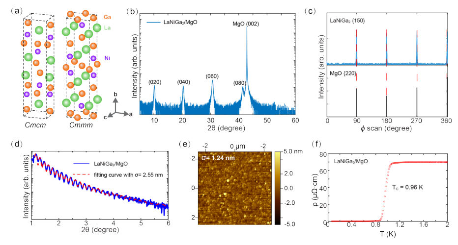
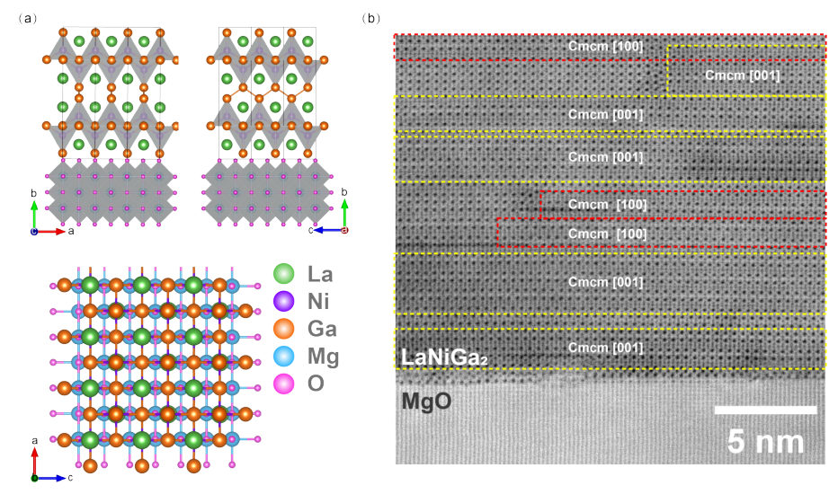
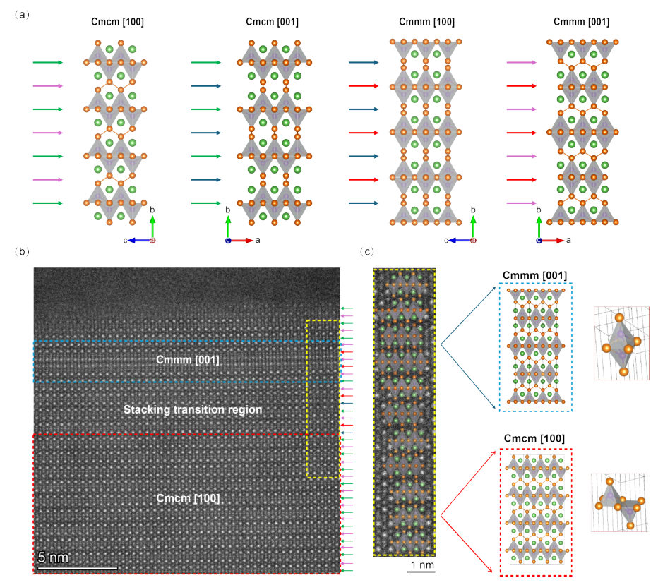
Summary. This work reports on the growth and characterization of superconducting LaNiGa2 thin films, confirming superconductivity at $\sim 1 ext{ K}$. Crucially, atomic-resolution TEM reveals that the film exhibits local stacking polymorphism, coexisting between $ ext{Cmcm}$ and $ ext{Cmmm}$ crystal structures. This finding suggests that local structural details, rather than just the average crystal structure, govern the material's electronic and superconducting behavior.
Why it may be interesting. The investigation into how subtle, local structural variations (polymorphism) dictate the electronic and superconducting properties of a material is highly relevant to understanding emergent quantum phenomena in strongly correlated systems.
Main problem. The study investigates the interplay between superconductivity and local stacking polymorphism in LaNiGa2 thin films.
Main result. The films exhibit superconductivity ($T_c \approx 1 ext{ K}$) and show local structural variations, coexisting between the $ ext{Cmcm}$ and $ ext{Cmmm}$ crystal structures, which is difficult to detect with conventional XRD.
Method. The research combines magnetron sputtering for film growth, electrical transport measurements, and atomic-resolution transmission electron microscopy (STEM) to characterize the structure.
Model / system. The physical system is superconducting LaNiGa2 thin films grown epitaxially on MgO substrates. The analysis compares the structural motifs of two closely related space groups, $ ext{Cmcm}$ and $ ext{Cmmm}$, which govern the local stacking arrangement.
Key observables. Superconducting transition temperature ($T_c \approx 0.96 ext{ K}$), crystallographic orientation ($ ext{(010)}$), and the coexistence of $ ext{Cmcm}$ and $ ext{Cmmm}$ local stacking domains.
Important parameters / regimes. Superconducting transition temperature ($\approx 1 ext{ K}$); energy difference between structural variants ($ ext{Cmmm}$ calculated to be $12.7 ext{ meV/atom}$ lower than $ ext{Cmcm}$).
Assumptions / limitations. The local structural variations observed via TEM are representative of the electronic structure influencing superconductivity, despite the near-identical lattice parameters of the two phases.
Figures summary. Figures show XRD scans confirming $ ext{(010)}$ orientation and $\phi$ scans detailing rotational twinning. STEM images illustrate the coexistence of $ ext{Cmcm}$ and $ ext{Cmmm}$ stacking motifs, while resistivity curves confirm the superconducting transition.
Paper structure. The paper first establishes the superconducting nature and crystalline growth of the films using XRD and transport measurements. It then employs atomic-resolution TEM to reveal the subtle, local structural variations (stacking polymorphism) between the $ ext{Cmcm}$ and $ ext{Cmmm}$ phases, linking this structural heterogeneity to the material's electronic properties.
LaNiGa2 has attracted considerable interest as a candidate unconventional superconductor, particularly due to its reported time-reversal symmetry breaking and nonsymmorphic crystal structure hosting symmetry-protected electronic band degeneracies. Here, we report the growth and characterization of superconducting LaNiGa2 thin films on MgO substrates by magnetron sputtering. X-ray diffraction reveals highly crystalline, (010)-oriented films with well-defined in-plane alignment and rotational twinning. Electrical transport measurements establish superconductivity with a transition temperature of approximately 1 K. Atomic-resolution transmission electron microscopy reveals local variations in crystallographic orientation and interlayer stacking, with a predominantly Cmcm structure containing minority Cmmm regions. The coexistence of these closely related structures reveals local stacking polymorphism that is difficult to distinguish using conventional X-ray diffraction. These findings establish a superconducting LaNiGa2 thin-film platform and provide new insight into the local crystal structure of a material whose electronic properties and superconducting pairing remain under active investigation.